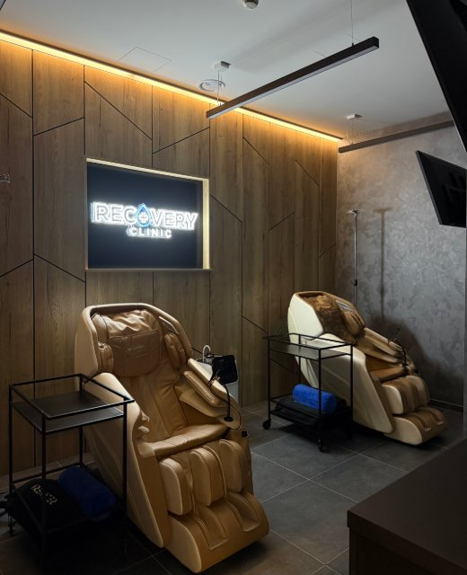

Ako to funguje
Zdravotník vám zavedie tenkú kanylu do žily na ruke. Pocítite len krátky vpich, podobne ako pri odbere krvi. Potom sedíte v masážnom kresle, kým infúzia dokvapká.
Vitamínové infúzie · Prievozská 4/A, Bratislava Vitamínové infúzie · Bratislava
Vitamíny a minerály priamo do krvi, kým oddychujete v masážnom kresle pri Netflixe. Nechajte kontakt a ako nový klient získate na prvú infúziu zľavu 20 % – termín si vyberiete hneď online, alebo vám zavoláme. Vitamíny a minerály priamo do krvi, kým oddychujete v masážnom kresle. Nechajte kontakt a na prvú infúziu získate zľavu 20 %.
−20 % na prvú infúziu ušetríte 11,80 – 39,80 € podľa infúzie
alebo zavolajte +421 948 375 871 Po–Pi 10:00–18:00 · So–Ne 9:00–15:00
TESTOVACÍ REŽIM – údaje sa nikam neposlali
Zaberie to 30 sekúnd
Pri IV terapii idú vitamíny, minerály a tekutiny priamo do krvi cez tenkú kanylu v žile. Nemusia prejsť cez tráviaci trakt, a tak sa dajú podať aj dávky, ktoré by ste v tabletkách neprijali.
Zdravotník vám zavedie tenkú kanylu do žily na ruke. Pocítite len krátky vpich, podobne ako pri odbere krvi. Potom sedíte v masážnom kresle, kým infúzia dokvapká.
Pri tabletkách sa časť látok stratí cestou cez tráviaci trakt a niektoré sa vo vyššej dávke ani nevstrebú. Infúzia ide priamo do krvi, preto sa dá podať napríklad aj vyššia dávka vitamínu C.
Pre ľudí, ktorí majú za sebou náročné obdobie, chcú sa pripraviť na zimu, pravidelne trénujú alebo sa starajú o pleť. A pre každého, kto si chce na chvíľu vydýchnuť.
Úprimne: infúzia nenahradí spánok, pohyb ani pestrú stravu. Je to doplnok, ktorý vám podá vyškolený zdravotnícky personál v pohodlí masážneho kresla.
Kombinácia vitamínov a minerálov v infúzii je známa ako „Myersov koktejl“. Pomenovali ju podľa Američana Johna Myersa, ktorý ju začal podávať ako jeden z prvých. Vychádza z nej aj naša infúzia Life Elixir a v rôznych podobách ju dnes ponúkajú kliniky po celom svete.
To vám odporučí zdravotník podľa toho, čo od infúzie očakávate. Niektorí klienti prídu pred náročným obdobím, iní si z nej spravia pravidelnú chvíľu pre seba.
Nemusíte to vedieť vopred. Vo formulári zaškrtnite „Neviem, poraďte“ a zdravotník vám pred infúziou odporučí tú, ktorá sa vám hodí. Krátka konzultácia je súčasťou každej návštevy.
Zľava 20 % na prvú infúziu po vyplnení formulára · platíte až na mieste
Nechajte kontakt – zaberie to 30 sekúnd. Zľavu vám zapíšeme na meno a termín si vyberiete hneď online, alebo vám zavoláme.
Zdravotník sa s vami krátko porozpráva a odporučí infúziu, ktorá sa vám hodí.
Infúziu dostanete v masážnom kresle pri Netflixe a s občerstvením. Celá návšteva trvá približne hodinu a pol – väčšinu z toho len oddychujete.
Ďalšie špecializované infúzie vám odporučí zdravotník pri konzultácii. Poradiť sa

Infúzia trvá chvíľu – tak nech je to ten najpríjemnejší čas v týždni. Pohodlne, v súkromí a s profesionálnou starostlivosťou.
Infúziu podáva vyškolený zdravotnícky personál a počas infúzie na vás dohliada.
Zero gravity poloha a 8 masážnych programov.
Váš obľúbený seriál, nápoj a Wi-Fi zadarmo.
Doplnková kyslíková terapia s 90 – 95 % kyslíka.
Po–Pi 10:00–18:00 · So–Ne 9:00–15:00
Vopred neplatíte nič, platíte až na prevádzke.
„Pani doktorka so sestričkou boli profesionálne, nápomocné, milé a ľudské.“
„Veľmi príjemné. Od príchodu cez veľmi dobrý servis až po super služby v masážnom kresle pri pozeraní TV.“
„Super prístup, poradenstvo, príjemný priestor, dokonalý oddych… vrelo odporúčam.“
Nenašli ste odpoveď? Zavolajte nám na +421 948 375 871 alebo napíšte na bratislava@recovery-clinic.sk.
Doprajte si chvíľu pre seba
Vyplnenie trvá 30 sekúnd. Termín si vyberiete online, alebo vám zavoláme. Platíte až na mieste.